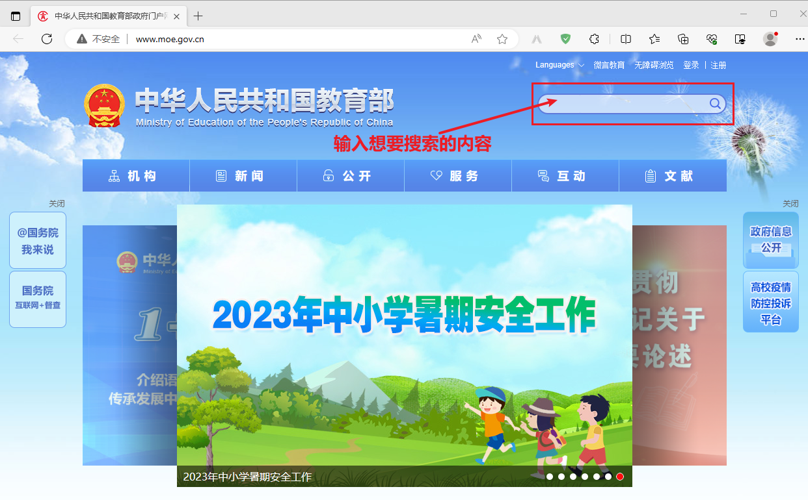
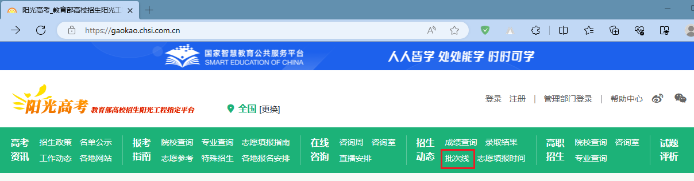
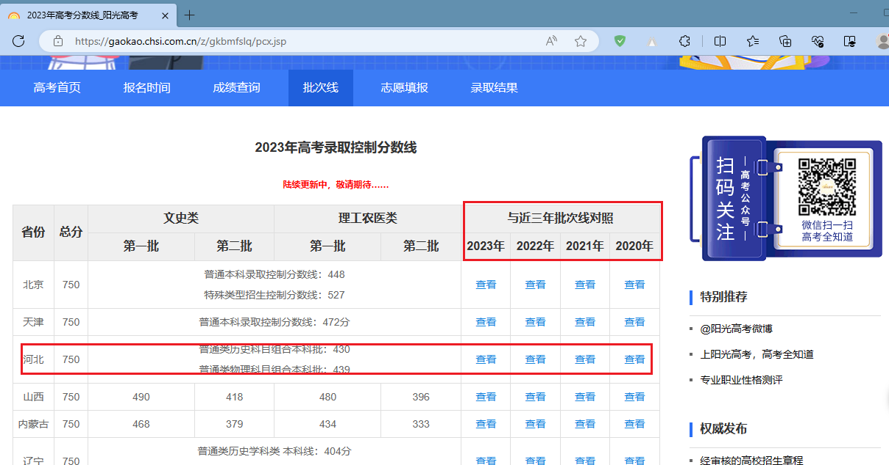

高考
高考，对于家长来说绝对是一个xxx（我也知道该怎么形容，自己填空吧）的字眼。尤其是对于普通家庭来说，高考太重要了……同样，高考之后报志愿同样也是一个xxx（同上）的话题，关注度太高了，牵动着每一位家长的心。笔者是河北人，目前（2023年）这里是
报志愿、学业规划已经是一个行业了。我不是专业干这个的，只是在帮人填报的过程中学到了一些东西，在此记录一下。可能条理不是特别清楚（如果之后有时间我会持续优化的），希望大家多多担待，多多提意见……
你知道这些网站吗
你知道这都是啥意思吗
本科（普通教育）、本科（职业教育）、高职（专科）、批次线、一分一段表、投档、滑档、退档、录取……知道的越多，越懵逼啊！咱那时候也没有（或者不知道）这些东西啊！想当年报的时候那是多么的潇洒……知道的还是不够多啊！相关的解释你还是自己看看这里吧，2023年高考志愿填报指南
专业维度
都有哪些专业
你可以通过下面的几种方式获取专业
-
利用 中华人民共和国教育部政府门户网站 网站【推荐】
点击查看详细步骤
- 点击上面的链接进入网站。效果如下图： 
- 搜索：普通高等学校本科专业目录。搜索结果如下图：
- 在搜索结果中寻找更新时间最新的或者有PDF图标的链接，也就是上图中圈中的链接，直接点击即可。效果如下图：
- 点击上图中红框圈中的链接（这是一个PDF文件的链接地址，不同浏览器打开效果应该不一样，这里用的是Edge）。效果如下图：
- 专业知识库|专业介绍|本科专业|高职专业_阳光高考
- 国务院客户端微信小程序
- 普通高等学校本科专业查询
- 你也可以直接只用Bing搜索，直接点击这个链接：https://cn.bing.com/search?q=普通高等学校本科专业目录
国家职业教育教学标准体系
这个不知道该不该放到这个章节下，感觉这个网站还不错。专题_职业教育国家教学标准体系 - 中华人民共和国教育部政府门户网站
学科评估
这个不知道该不该放到这个章节下，感觉这个网站还不错。全国第四轮学科评估结果公布
院校维度
都有哪些院校
你可以通过下面的几种方式获取院校
-
利用 中华人民共和国教育部政府门户网站 网站
点击查看详细步骤
- 点击上面的链接进入网站。上面查询“专业”的时候已截图，这里不在重复。
- 搜索：全国高等学校名单。搜索结果如下图：
- 这个搜索结果比较明显，这里是第一个，直接点击即可。效果如下图：
- 点击上图中红框圈中的链接（这是一个Excel的链接地址，不同浏览器打开效果应该不一样。这里用的是Edge）。Edge应该可以直接打开的，今天不知道出什么问题了，于是就直接下载下来了。打开文件，如下图：
- 院校信息库_阳光高考
- 国务院客户端微信小程序
-
利用 掌上高考—2023高考志愿填报服务平台 网站
点击查看详情
- 请求 URL
- https://api.eol.cn/web/api/
- 请求方法
- POST
- 请求负载
-
{ "keyword": "", "page": 1, "province_id": "", "ranktype": "", "request_type": 1, "signsafe": "xxxxxxxxxxxxxxxxxxx", "size": 300, "type": "", "uri": "apidata/api/gkv3/school/lists" } - 请求结果
如何填报志愿
建议在填报之前先看看
- 报考指南_阳光高考
- 高考填报志愿综合参考系统_阳光高考 啥时候，啥时候，啥时候，阳光高考网有了这东东，我感觉错过了什么……
如何报志愿？这一章节是整篇的重点，也是大家比较关注的，尽最大的努力还原我参与填报的过程并加以补充校正。如果有说的不对的地方请大家指正；如果能都帮到你，让你少走弯路，是对我最大的鼓励……
后面的一系列操作都是以下面的考生为例展开的
考生省份： 河北省
考生类型： 普通类
报考年份： 2023年
首选科目： 物理
再选科目： 生物、地理
考生分数： 492分
啥时候填报志愿
你可以在 河北省教育考试院 官网找到答案：
点击查看详细步骤
- 点击河北省教育考试院进入网站。效果如下图：
- 搜索：志愿填报须知。搜索结果如下图：
- 这个搜索关键字不错，搜索结果都是这个，只是年度不同，本年度的是上图中的第一个，直接点击即可。效果如下图：
你还可以在 阳光高考 官网找到答案（这里时间应该会滞后，因为他的来源也是各省的考试院）：
点击查看详细步骤
-
点击阳光高考_教育部高校招生阳光工程指定平台进入网站。效果如下图：

- 点击上图中红框圈中的链接。效果如下图：
- 点击上图中红框圈中的河北省的填报志愿时间的【详细】链接。效果如下图：
段位是如何划分的
咱是本科还是专科啊，是怎么划分的？网上都叫“批次线”，然而你在省考试院官网是搜不到的，人家叫“录取控制分数线”，😵😵😵。咱就不能统一一下名称嘛！
你可以在 河北省教育考试院 官网找到答案：
点击查看详细步骤
- 点击河北省教育考试院进入网站。查询“志愿填报须知”的时候已截图，这里不在重复。
- 搜索：录取控制分数线。搜索结果如下图：
- 这个搜索结果挺好，再根据发布时间和标题过滤一下基本上就找到了，本年度的是上图中的第一个（其他年度的这里也搜索出来了，黄色背景的），直接点击即可。效果如下图：
你还可以在 阳光高考 官网找到答案（这里时间应该会滞后，因为他的来源也是各省的考试院）：
点击查看详细步骤
- 点击阳光高考_教育部高校招生阳光工程指定平台进入网站。效果如下图： 
- 点击上图中红框圈中的链接。效果如下图： 
-
点击上图中红框圈中的河北省的2023年的“查看”链接。效果如下图：

咱考了多少分
啥时候才能知道咱考了多少分？其实查询“批次线”时，还送了一点福利，在文章的结尾告诉我们何时可以查询成绩。上面的截图中也已经标注了。
还有就是 阳光高考 官网也给出了快速入口，和“批次线”一样，“批次线”的上方就是“成绩查询”的链接，点击之后，仍然是一个全国各省份的汇总，选择河北的，再次点击之后，进入的还是上面的“批次线”的页面。
咱属于哪个段位
阶级分层太厉害了，咱是站在了金字塔顶端还是匍匐在脚下……这又是一个坑，都叫“一分一段表”，都说会在省考试院官网公布，但是你在省考试院官网中搜索“一分一段表”是搜不到的……网站上没有这个概念，至少河北考试院网站中没有找到。人家叫：“成绩统计表”，真无语啊！
点击查看详细步骤
- 点击河北省教育考试院进入网站。查询“志愿填报须知”的时候已截图，这里不在重复。
- 搜索：成绩统计表。搜索结果如下图：
- 这个搜索结果还行，再根据发布时间和标题过滤一下基本上就找到了，本年度的是上图中的第二个（其他年度的这里也搜索出来了，黄色背景的，这些下面会用到），直接点击即可。效果如下图：
- 点击上图中红框圈中的链接（这是一个PDF文件的链接地址，不同浏览器打开效果应该不一样，这里用的是Edge）。效果如下图：
根据上面拿到的“一分一段表”（PDF文件）和自己的分数得到自己的省内排名。如下图：
上图中红框圈中的是分数、该分数的人数、累计人数，也就是说考生的排名应该是一个区间，这里应该是：109175~110450。按照网上的说法，为了保险起见还是用数值大的吧，也就是该考生本年度省内排名为：110450。
等位分换算
到这里，我们已经知道了咱的省内排名。随后就是需要拿到前几年（例如：2022年、2021年）等位分。说白话就是：以咱今年的水平（分数）放在过去几年是什么水平（分数）。具体操作就是：本年度是通过“一分一段表”和自己的分数得到了排名；过去几年对应的水平（分数）就是通过该年的“一分一段表”（上面查询2023年的时候同时将前几年的也查询出来了）和排名反推分数（不知道我说清楚了没有……）。直接上图：
这样就拿到了咱在2022年、2021年的水平（分数），分别是：483分、475分。其实可以多搞几年的，道理都是一样的。
快把投档情况告诉我
走到这里就拿到了2022年、2021年的等位分。这些分数有啥用？要想他们发挥作用，还得需要河北省考试院向各大高校投档的统计情况。说白话就是得知道各大高校各个专业的投档最低分是多少。有了这个最低分，再加上我们已经换算好的等位分，就知道我们能不能去某个学校的某个专业了。例如：如果咱的等位分高于最低分三四十分，那基本上就妥了；如果约等于子弟分，那就有点悬啊（还不赶紧上柱香，拜一拜）；如果低于最低分不少，那咱还是洗洗睡吧！当然这也不是绝对的，毕竟这只是过去几年的情况，谁知道今天啥情况呢，是吧。
说了一大推废话，赶紧上硬菜：
点击查看详细步骤
- 点击河北省教育考试院进入网站。查询“志愿填报须知”的时候已截图，这里不在重复。
- 搜索：本科批平行志愿投档。搜索结果如下图：
- 这个搜索结果也挺好，再根据标题过滤一下就找到了，只找到了2022年、2021年的，不知道以前的名字是不是不叫这个，直接点击2022年的即可。效果如下图：
- 点击上图中红框圈中的链接（这是一个Excel的链接地址）。直接下载下来了。打开文件，如下图：
2021年的和弄2022年的一样，这里就不重复截图了。
发挥一下自己的特长
“xxxx年河北省普通高校招生本科批平行志愿投档情况统计”这个Excel中关于专业和院校相关的信息太少了：专业只有专业代号和专业名称；院校只有院校代号和院校名称。专业怎么着也得把门类（专业大类）、专业类给加上吧；院校怎么着也得把所在地、办学层次加上吧，如果在把院校官网等加上那就更好了。反正就是相关信息越多越好，方便我们更好筛选。把这些信息都汇总到一起，我是没有找到这个列表（当然哪些需要注册或者花钱的网站得排除啊），这里就用到了咱的专业知识了，开始整活。下面我们以“xxxx年河北省普通高校招生本科批平行志愿投档情况统计”为基础，逐步丰富他的专业和院校信息。具体的操作方式：PDF文件转成->Excel文件转成->JSON文件补充到->目标文件。
调整一下Excel文件
为了处理程序可以更好的读取并修改Excel文件，还是需要你动动手稍微修改一下Excel文件，效果图如下：

补充专业信息
想要添加更详细的专业信息，数据从哪里搞呢？你说的对，咱们上面已经整了（你看，咱多有先见之明，嘿嘿），就是“专业维度”的“都有哪些专业”章节弄的“普通高等学校本科专业目录”，这是一个PDF文件，上文已经截图了。
PDF文件转Excel文件
PDF格式的不太好处理，这里先转成Excel格式的。有在线版的转换工具：iLovePDF | 为PDF爱好者提供的PDF文件在线处理工具，这个就很棒，必须点赞。转换之后的Excel文件效果图如下：
Excel文件转JSON文件
Excel转JSON也是有在线工具的，只是咱们的这个Excel文件有点不规范，转成的JSON数据也是不好用，当然你如果自己先处理成类似下图中的形式，还是可以的：
这里专门为这个Excel文件写了一个处理程序（C#控制台），具体的代码会在后面统一给出。这里也需要你简单的修改一下这个Excel文件：请将（序号 门类、专业类 专业代码 专业名称 学位授予门类 修业年限 增设年度）作为第一行，前面没用的行可以删掉。生成的Json文件效果如下图：
JSON文件补充到Excel文件
有了JSON数据之后，就可以补充Excel文件了，这里添加了门类（专业大类）和专业类，这样我们就是通过门类和专业类这些大的分类筛选了。具体的代码会在后面统一给出。效果图如下：
补充院校信息
想要添加更详细的院校信息，数据从哪里搞呢？你说的对，咱们上面已经整了（你看，再次印证，咱多有先见之明，嘿嘿），就是“院校维度”的“都有哪些院校”章节弄的“全国普通高等学校名单”，这是一个Excel文件，上文已经截图了。
Excel文件转JSON文件
“全国普通高等学校名单”，这个是Excel文件，还是很友好的。有了上面处理的经验，继续在处理程序中添加方法用来处理这个，具体的代码会在后面统一给出。这里也需要你简单的修改一下这个Excel文件：请将（序号 学校名称 学校标识码 主管部门 所在地 办学层次 备注）作为第一行，前面没用的行可以删掉。修改之后，效果图如下：
生成的Json文件效果如下图：
JSON文件补充到Excel文件
有了JSON数据之后，就可以补充Excel文件了，这里添加了主管部门、所在地和办学层次。效果图如下：
源码
前面提到的源码都在这里啦
快点点开看看吧
// 调用示例（注意：根据自己的实际情况修改下面的路径）
// 实际调用的时候，请一个一个调用
NpoiGaoKaoHelper.Excel2JsonSpecialtyCatalog(@"E:\DDZ\gk\zhuanye.xlsx", @"E:\DDZ\gk\zhuanye.json");
NpoiGaoKaoHelper.Excel2JsonUniversity(@"E:\DDZ\gk\xuexiao.xls", @"E:\DDZ\gk\xuexiao.json");
NpoiGaoKaoHelper.AddSpecialtyCategory(@"E:\DDZ\gk\2022.xlsx", @"E:\DDZ\gk\zhuanye.json", @"E:\DDZ\gk\2022-v1.xlsx", new Dictionary<string, string>()
{
{ "门类","Category" },
{ "专业类","SpecialtyClass" }
}, 3);
NpoiGaoKaoHelper.AddUniversityInfo(@"E:\DDZ\gk\2022-v1.xlsx", @"E:\DDZ\gk\xuexiao.json", @"E:\DDZ\gk\2022-v2.xlsx", new Dictionary<string, string>()
{
{ "主管部门","CompetentDepartment" },
{ "所在地","Location" },
{ "办学层次","EducationalLevel" }
}, 1);